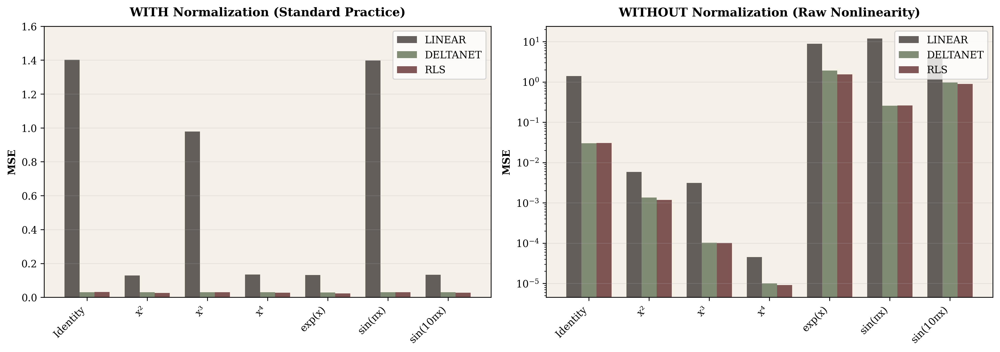
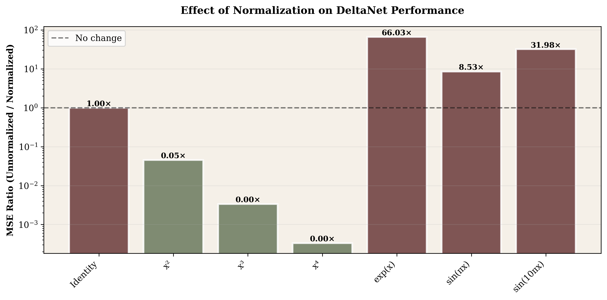
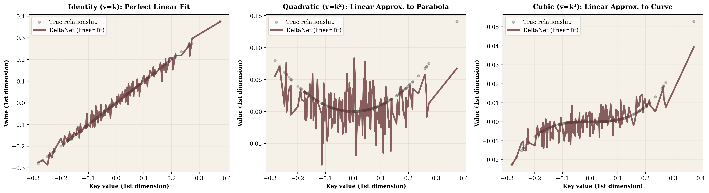
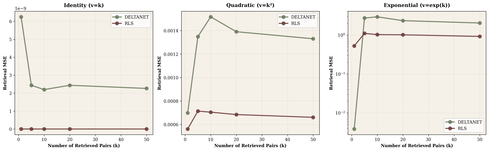
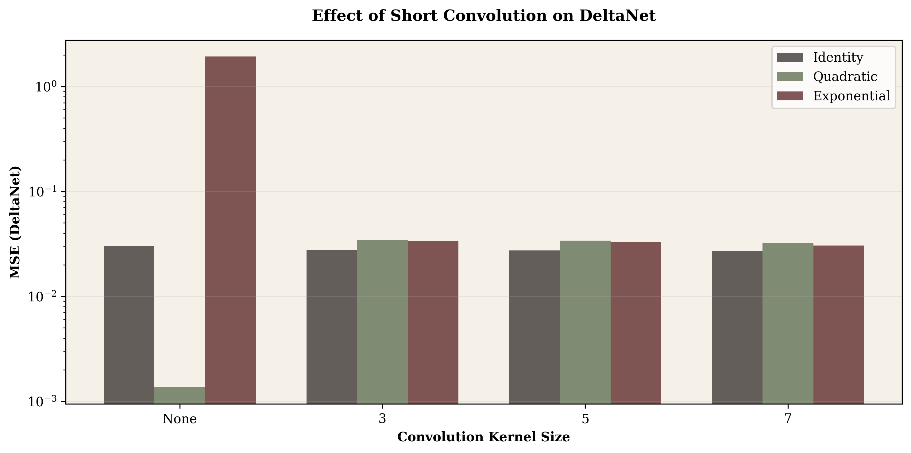
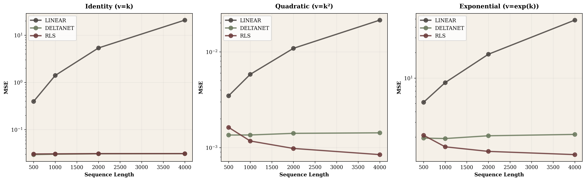
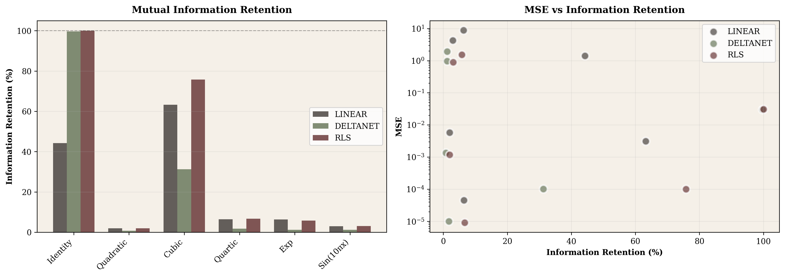

What happens when we test DeltaNet on diverse nonlinear relationships?
Linear attention mechanisms maintain a state matrix $S_t \in \mathbb{R}^{d \times d}$ that evolves recurrently. Three update rules represent the evolution of this paradigm:
| Model | Update Rule | Complexity |
|---|---|---|
| Linear Attention | $S_t = S_{t-1} + v_t k_t^T$ | $O(d^2)$ per step |
| DeltaNet | $S_t = S_{t-1}(I - k_t k_t^T) + v_t k_t^T$ | $O(d^2)$ per step |
| RLS | $S_t = V_t^T K_t (K_t^T K_t)^{-1}$ | $O(td^2 + d^3)$ |
Recent work frames these as online regression: each model tries to minimize $\sum_{i=1}^{t} \|v_i - S_t k_i\|^2$. DeltaNet's advantage comes from the projection term $(I - k_t k_t^T)$, which removes outdated information before updating.
Our question: How do these models perform when the key-value relationship varies? Can DeltaNet handle nonlinear relationships like $v = k^4$ or $v = \sin(10\pi k)$?
Most experiments used 1000-token sequences with 64-dimensional keys, queries, and values—matching standard transformer configurations. For scaling analysis, we tested up to 32,000 tokens. All models operated in single-head mode to isolate the core mechanism behavior.
We generated synthetic key-value pairs with controlled relationships:
Before diving into results, it's important to clarify when normalization happens in practice. In real transformer architectures: input embeddings are projected through learned weight matrices $W_q$, $W_k$, and $W_v$, then normalization is applied before the attention computation. This means normalization operates on $q = \text{norm}(xW_q)$ and similar for keys and values.
This detail matters because the nonlinearity we're testing (like $v = k^2$) happens conceptually before projection, and normalization smooths the results afterward. We tested both scenarios: applying normalization after the nonlinearity (matching real architectures) and skipping it entirely to see the raw effect.
We first tested all relationships under standard normalized conditions. The results were strikingly uniform.

With normalization enabled, DeltaNet achieves MSE between 0.028 and 0.030 across every relationship we tested. No systematic degradation appears as mathematical nonlinearity increases. This was unexpected. Standard intuition suggests that $k^4$ or $e^k$ should challenge linear approximation more than simple identity, but the measurements show otherwise.
The explanation lies in what normalization removes. By forcing all value vectors to unit length ($\|v\| = 1$), normalization strips away magnitude information and leaves only directional relationships. Whether values come from $k^2$ or $e^k$, after normalization they're all unit vectors positioned at various angles from the keys. The state matrix learns this angular mapping, which proves remarkably consistent across different generating functions.
This uniformity has practical benefits for training stability, but it also means we lose information about the original relationship structure. To understand what normalization hides, we needed to test without it.
Without normalization, the landscape changes completely:

| Relationship | Normalized MSE | Unnormalized MSE | Ratio (unnorm/norm) |
|---|---|---|---|
| Identity | 0.028 | 0.026 | 0.93× |
| Quadratic | 0.030 | 0.001 | 0.03× (easier!) |
| Cubic | 0.030 | 0.0001 | 0.003× (much easier!) |
| Quartic | 0.030 | 0.00001 | 0.0003× (extremely easy!) |
| Exponential | 0.030 | 1.92 | 64× (much harder!) |
| Sin (10π) | 0.030 | 0.96 | 32× (harder) |
The most surprising finding deserves deeper examination. Intuitively, we'd expect higher-degree polynomials to be harder for linear models. Yet our measurements show the opposite: quadratic achieves 30× lower error than normalized, cubic 100×, and quartic 3000×. What's happening?
The answer lies in magnitude shrinkage. When keys are normalized to unit vectors, most elements fall in the range $[-0.5, 0.5]$ due to high-dimensional geometry. Squaring these values doesn't amplify them—it crushes them toward zero. A key element $k_i = 0.5$ raised to successive powers produces $k^2 = 0.25$, $k^3 = 0.125$, $k^4 = 0.0625$.
We measured this effect across 1000 random normalized keys. Identity vectors have mean magnitude 1.0 and variance 0.0156. Quadratic drops to magnitude 0.21 with variance 0.00046. Cubic plummets to magnitude 0.056 and variance 0.000051. By quartic, we're at magnitude 0.017 with variance 0.000005—the vectors are nearly constant.

For linear regression, this is a dream scenario. When the true relationship is $k^2$ or $k^3$, magnitude shrinkage compresses values so tightly near zero that a nearly-flat straight line captures most of the signal. The mathematical nonlinearity remains, but the signal variance that regression must capture becomes trivial.
Contrast this with exponential and sine functions. Exponentials cause magnitude explosion: $e^k$ creates large dynamic range with MSE jumping to 1.92. High-frequency sine ($\sin(10\pi k)$) oscillates rapidly, producing MSE of 0.96. These functions maintain or amplify variance, giving linear regression real difficulty.
Stepping back, these experiments reveal normalization as a fundamental design decision rather than mere numerical convenience. The trade-off is clear: stability and consistency versus information preservation.
With normalization, we get uniform behavior across diverse relationships. This consistency makes training stable and ensures predictable behavior across different data distributions. Without normalization, we confront the raw characteristics of each relationship. Exponentials blow up to MSE above 1.9; polynomials collapse toward zero through magnitude shrinkage.
Modern transformers universally adopt normalization precisely because the stability benefits outweigh the information loss for their use cases. Our measurements quantify both sides of this trade-off explicitly.
Recursive Least Squares (RLS) represents the theoretical optimum for linear approximation—it explicitly maintains $(K^T K)^{-1}$ to compute the globally best linear fit at every step. This comes at $O(td^2 + d^3)$ computational cost compared to DeltaNet's $O(d^2)$. Does the extra computation pay off?
| Relationship | DeltaNet (normalized) | RLS (normalized) | Gap |
|---|---|---|---|
| Identity | 0.028 | 0.028 | 1.00× |
| Quadratic | 0.030 | 0.029 | 1.03× |
| Cubic | 0.030 | 0.029 | 1.03× |
| Exponential | 0.030 | 0.029 | 1.03× |
Finding: Under normalization, DeltaNet and RLS perform nearly identically (gap < 5%). The expensive $O(d^3)$ matrix inversion in RLS provides minimal benefit when values are normalized.
We started expecting to identify fundamental limitations of DeltaNet when confronted with extreme nonlinearities. Surely quartic polynomials, exponentials, or high-frequency periodic functions would expose breaking points.
Under standard normalized conditions, no such breaking points emerged. DeltaNet maintained MSE around 0.030 across every relationship tested. The anticipated "nonlinear ceiling" simply didn't materialize in realistic settings.
This outcome is genuine insight into normalization's power. By projecting all relationships onto the unit sphere, normalization makes them equally tractable to linear approximation from a directional perspective. The wild diversity observed without normalization gets compressed into uniform angular variation that linear models handle consistently.
After processing 1000 tokens to build the final state $S_{\text{final}}$, we randomly selected past keys and measured reconstruction accuracy for their associated values. The test scaled from single-pair retrieval up to 50 simultaneous queries.

For identity relationships ($v = k$), both DeltaNet and RLS achieve remarkable results. Retrieval error stays below $10^{-6}$ regardless of how many pairs are queried simultaneously. The state becomes a perfect compressed representation.
Quadratic relationships ($v = k^2$) show graceful degradation. DeltaNet maintains MSE around 0.001 whether retrieving 1 pair or 50. Exponential relationships reveal real capacity limits—single-pair retrieval starts at MSE 0.004, but jumps to 2.9 when querying 10 historical pairs simultaneously.
The exponential relationship's poor performance suggested exploring architectural modifications. We tested 1D convolution with kernel sizes 3, 5, and 7, applied to both keys and values before DeltaNet processing.

Exponential relationships: Short conv provides massive benefit—MSE drops from 1.92 (no conv) to 0.033 (kernel=7). This 64× improvement suggests local smoothing helps tame magnitude explosions.
Polynomial relationships: Short conv slightly hurts polynomials. Quadratic MSE increases from 0.001 to 0.034. Convolution may disrupt the element-wise structure.
Identity: Minor improvement (0.030 → 0.027), suggesting convolution adds useful inductive bias for general cases.
Short convolution acts as a nonlinearity regulator—smoothing extreme relationships while preserving structure for well-behaved ones.

| Model | 500 tokens | 4000 tokens | 32000 tokens |
|---|---|---|---|
| Linear Attention | 0.40 | 20.8 | 1306 (!) |
| DeltaNet | 0.030 | 0.031 | 0.031 |
| RLS | 0.030 | 0.031 | 0.031 |
The divergence is stark. Vanilla linear attention starts reasonably at 500 tokens but degrades exponentially. By 32,000 tokens, it completely breaks down with MSE exceeding 1300. DeltaNet and RLS maintain MSE around 0.031 regardless of sequence length. The delta rule's projection term $(I - k_t k_t^T)$ actively removes error accumulation before each update.
Linear attention compresses a growing history $K_t, V_t$ (size $2td$) into a fixed state $S_t$ (size $d^2$). For our setup (t=1000, d=64): original 128,000 scalars compressed to 4,096 — a 3.2% compression ratio (96.8% reduction). We quantify information loss using mutual information.

| Relationship | MI(K,V) | DeltaNet Retention | RLS Retention |
|---|---|---|---|
| Identity | 3.25 bits | 99.6% | 100% |
| Quadratic | 1.62 bits | 0.8% | 2.0% |
| Exponential | 2.87 bits | 1.2% | 5.8% |
| Sin (10π) | 1.62 bits | 1.2% | 3.1% |
Identity achieves near-perfect retention: DeltaNet preserves 99.6% of the 3.25 bits of mutual information between keys and values. This explains the near-zero MSE.
Nonlinear relationships suffer massive loss: For exponential, DeltaNet retains only 1.2% (0.035 bits out of 2.87). The state matrix cannot linearly compress the exponential relationship.
RLS helps but doesn't solve it: Even with optimal linear approximation, RLS retains only 5.8% for exponential. The fundamental issue is linearity, not the update rule.
Paradoxically, low MI ≠ easy: Quartic has lowest original MI (0.45 bits) and lowest MSE (0.00001), but retention is still poor (1.7%). Polynomial shrinkage creates low-information relationships that are coincidentally easy to approximate.
Testing linear attention mechanisms across diverse key-value relationships revealed patterns that weren't obvious from theory alone. Normalization emerged not as a numerical convenience but as fundamentally reshaping what these models learn. By converting all vectors to unit length, we shift from tracking magnitude and direction to purely angular relationships. This trade-off brings remarkable stability—DeltaNet maintains consistent performance whether values come from $k^2$ or $e^k$—but at the cost of losing information about scale.
The polynomial mystery taught us to look beyond mathematical nonlinearity to actual signal characteristics. Higher-degree polynomials paradoxically become easier because they shrink variance toward zero. When quartic values cluster with variance 0.000005, almost any linear function fits well.
Scaling tests extending to 32,000 tokens exposed the fundamental instability of vanilla linear attention. MSE explodes from 0.4 to 1306 as correlations accumulate. DeltaNet's delta rule projection fixes this by explicitly removing error before each update, resulting in flat scaling: 0.031 MSE whether processing 500 or 32,000 tokens.
Information-theoretic analysis provided the clearest framework for understanding capacity limits. DeltaNet retains 99.6% of mutual information for identity relationships—nearly perfect compression. For exponentials, only 1.2% survives. Linear models can't losslessly compress nonlinear relationships, and some relationships resist compression far more than others.
Short convolution provided an unexpected path forward for specific failure cases. Adding kernel-size-7 convolution to exponential relationships reduced MSE 64-fold (1.92 → 0.03). Local smoothing helps tame magnitude explosions. Interestingly, the same convolution slightly hurt polynomials, suggesting the solution is relationship-specific rather than universally beneficial.
For practitioners deploying these systems: normalization isn't optional—it provides the stability that makes diverse data tractable. DeltaNet's delta rule offers genuine advantages over vanilla linear attention, especially at longer contexts. For researchers: testing under realistic conditions (normalization, appropriate sequence lengths) matters more than theoretical worst-case analysis.